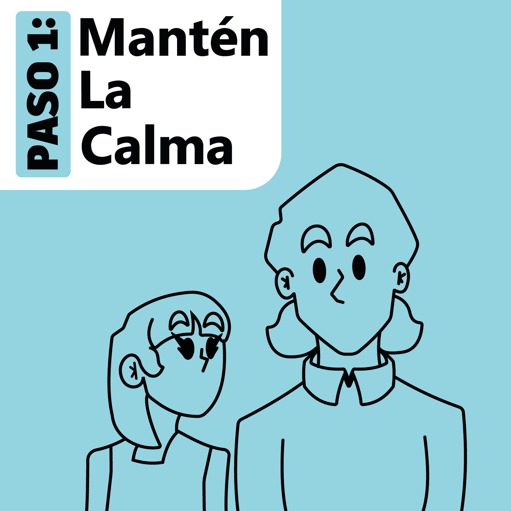
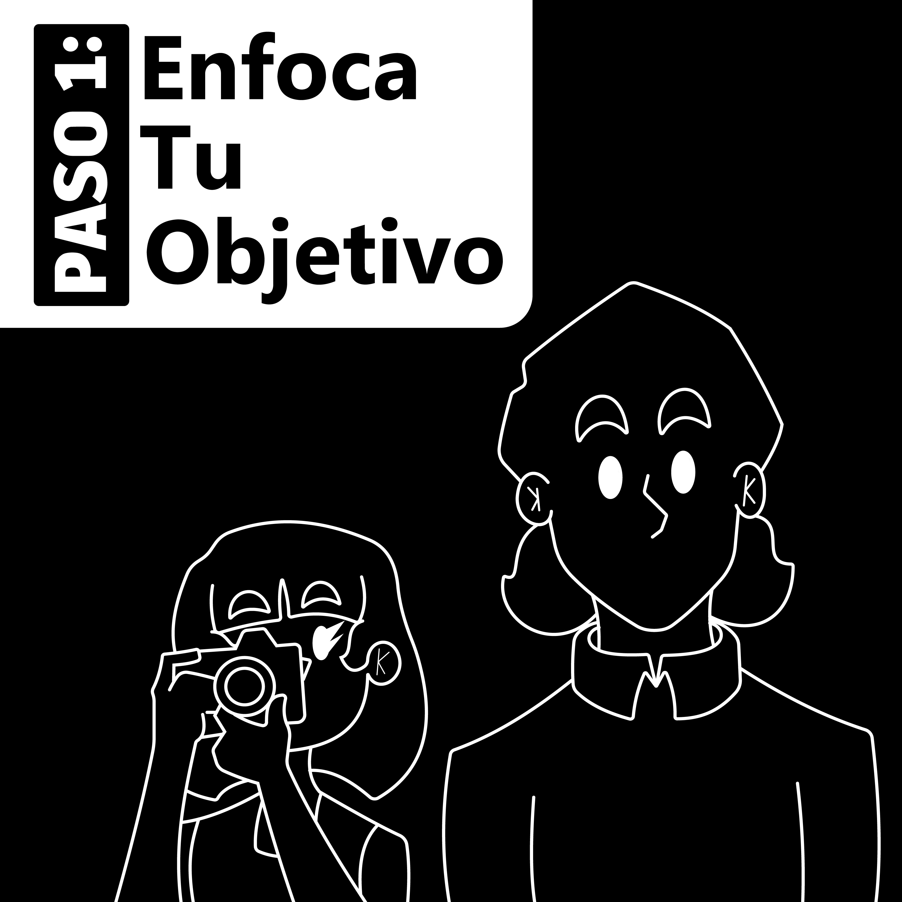

Biblioteca Paso a pasito
←

*Cortadas
*Asfixia
*Electrocución
*Incendio en casa
*Reacciones alérgica
*Aceite quemándose
*Intoxicación
*Explosión de tanque de gas
*Quemadura por aceite caliente
*Quemadura por agua caliente
Paso 1: Mantén la calma
Hogar

*La primera camara
*Entiende el modo manual
*Evita fotos borrosas o movidas
*jpg y raw
*Composicion
*No fotos aburridas
*Luz natural en interiores
*Editar
*Que foto primero
*Publicar
Paso 1: Enfoca tu objetivo